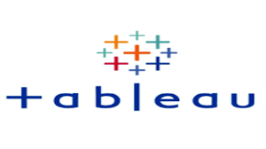
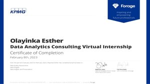

In this project, I used Python packages such as numpy, pandas, seaborn, and matplotlib to do data processing, cleaning, and exploratory analysis on a US unemployment dataset obtained from Kaggle. I visualized key findings such as the state and county with the greatest unemployment rate, as well as the year and month with the highest unemployment rate, and then used these insights to make data-driven decisions.
In this project, I used SQL queries to process, clean, analyze, and summarize a United States census dataset received from Kaggle in order to identify its underlying trends. I used data aggregation, grouping, filtering, and sorting to answer several key questions such as the total number of males and females in each state, the total population of different races in each state, the states with the highest poverty and income rates, and the states with the most unemployment. The information gathered was used to make data-driven decisions.
The project's goal is to "create marketing strategies aimed at converting casual riders into annual members." To do this, I analyzed Cyclistic's historical bike trip data to better understand how annual members and casual riders differ, why casual riders would purchase a membership, how digital media could alter their marketing techniques, and identify trends. To prepare for analysis, I made columns consistent and merged them into a single data frame, cleaned up, and added data.
I performed descriptive analysis and exported a summary file for further analysis, which includes visualizing the summary file with Tableau.
In this project, I used the Python programming language for data analysis and visualization, as well as libraries such as Pandas, Matplotlib, and Seaborn, to analyze and visualize a COVID-19 pandemic dataset obtained from Kaggle. In this project, I tracked the spread of the virus across countries and its impact on different populations. I explored whether there is a correlation between the population and total cases, total cases and death cases, and recovery rates.

This section contains projects for tableau dashboards.
Interactive dashboards designed to display some key findings obtained through data analysis.
.jpg)
In this project, I used the Python programming language for data analysis and visualization, as well as tools such as Pandas, Matplotlib, and Seaborn, to analyze a dataset of house prices obtained from Kaggle. This analysis helped in identifying factors that influence a house's price, such as the year the house was built, the overall quality (material and finishing quality) of the house, the grade living area, and other features. The exploratory analysis of housing prices with Python provides useful insights into the real estate market, helping in making data-informed decisions about buying, selling, and investing in real estate.

During my internship, I worked on three tasks: data quality assessment, data insights, and data presentation. On the dataset givien, I cleaned the data, performed distributional analysis, and did RFM Customer Segmentation. The data insights from the analysis, provide useful customer insights, which helped optimize resource allocation for targeted marketing. Improve performance by focusing on high-value consumers.